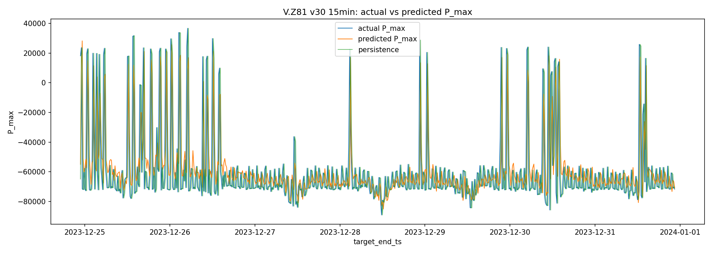
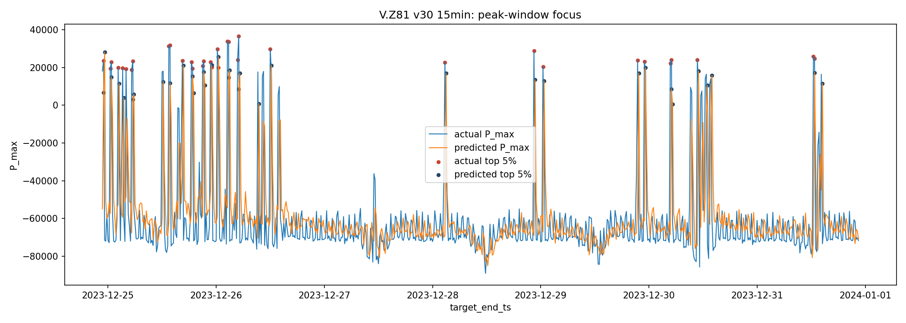
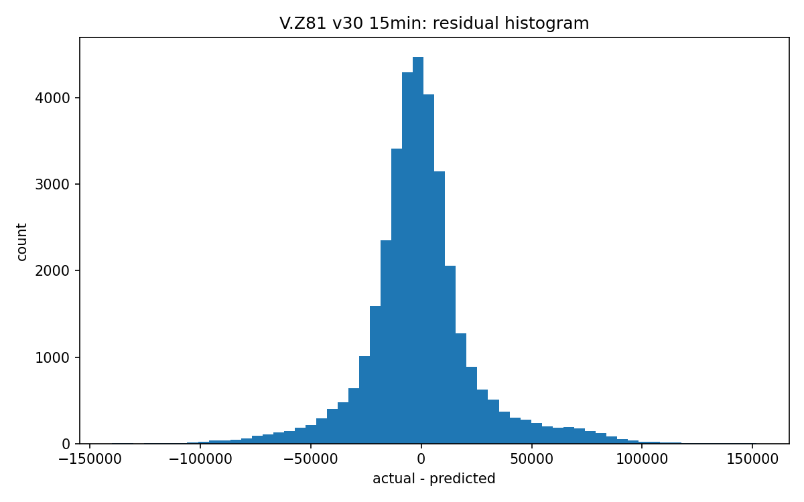

이 모델은 mart.peak_feature_15min에서 15분 단위 P.max_value를 타깃으로 사용해 다음 15min 피크 전력값을 예측합니다. 입력은 과거 24시간의 15분 feature입니다.
Persistence baseline은 직전 15분 P_max를 이후 예측값으로 반복하는 기준선입니다. Test RMSE 개선율은 12.63%, MAE 개선율은 5.74%입니다.
| split | mae | rmse | mape_pct | n_values | series |
|---|---|---|---|---|---|
| train | 10834.566406 | 16547.175781 | 119.418465 | 133672 | model |
| train | 12897.460938 | 21035.154297 | 139.646805 | 133672 | persistence |
| validation | 10963.821289 | 16471.947266 | 144.077209 | 34123 | model |
| validation | 12192.250000 | 19085.779297 | 167.739960 | 34123 | persistence |
| test | 16938.630859 | 25066.189453 | 123.896278 | 35035 | model |
| test | 17969.898438 | 28690.312500 | 134.026291 | 35035 | persistence |
| metric | series | quantile | actual_threshold | candidate_threshold | precision | recall | f1 | overlap_count | actual_peak_count | candidate_peak_count | mae_minutes | median_minutes | within_15min_pct | within_30min_pct | within_60min_pct | days |
|---|---|---|---|---|---|---|---|---|---|---|---|---|---|---|---|---|
| top_5pct_peak_capture | model | 0.950 | 102383.604687 | 96246.110937 | 0.774543 | 0.774543 | 0.774543 | 1357.0 | 1752.0 | 1752.0 | NaN | NaN | NaN | NaN | NaN | NaN |
| top_5pct_peak_capture | persistence | 0.950 | 102383.604687 | 102383.604687 | 0.760274 | 0.760274 | 0.760274 | 1332.0 | 1752.0 | 1752.0 | NaN | NaN | NaN | NaN | NaN | NaN |
| top_3pct_peak_capture | model | 0.975 | 138201.871875 | 130942.650000 | 0.740868 | 0.740868 | 0.740868 | 649.0 | 876.0 | 876.0 | NaN | NaN | NaN | NaN | NaN | NaN |
| top_3pct_peak_capture | persistence | 0.975 | 138201.871875 | 138201.871875 | 0.743151 | 0.743151 | 0.743151 | 651.0 | 876.0 | 876.0 | NaN | NaN | NaN | NaN | NaN | NaN |
| top_1pct_peak_capture | model | 0.990 | 178906.807188 | 161690.175312 | 0.623932 | 0.623932 | 0.623932 | 219.0 | 351.0 | 351.0 | NaN | NaN | NaN | NaN | NaN | NaN |
| top_1pct_peak_capture | persistence | 0.990 | 178906.807188 | 178906.807188 | 0.680912 | 0.680912 | 0.680912 | 239.0 | 351.0 | 351.0 | NaN | NaN | NaN | NaN | NaN | NaN |
| daily_t_plus_1_peak_time | model | NaN | NaN | NaN | NaN | NaN | NaN | NaN | NaN | NaN | 147.000000 | 15.0 | 52.602740 | 63.561644 | 68.767123 | 365.0 |
| daily_t_plus_1_peak_time | persistence | NaN | NaN | NaN | NaN | NaN | NaN | NaN | NaN | NaN | 23.054795 | 15.0 | 98.630137 | 98.630137 | 98.630137 | 365.0 |
| metric | series | quantile | actual_threshold | candidate_threshold | precision | recall | f1 | overlap_count | actual_peak_count | candidate_peak_count | mae_minutes | median_minutes | within_15min_pct | within_30min_pct | within_60min_pct | days |
|---|---|---|---|---|---|---|---|---|---|---|---|---|---|---|---|---|
| top_5pct_peak_capture | model | 0.95 | 102383.604687 | 96246.110937 | 0.774543 | 0.774543 | 0.774543 | 1357.0 | 1752.0 | 1752.0 | NaN | NaN | NaN | NaN | NaN | NaN |
| top_5pct_peak_capture | persistence | 0.95 | 102383.604687 | 102383.604687 | 0.760274 | 0.760274 | 0.760274 | 1332.0 | 1752.0 | 1752.0 | NaN | NaN | NaN | NaN | NaN | NaN |
| metric | series | quantile | actual_threshold | candidate_threshold | precision | recall | f1 | overlap_count | actual_peak_count | candidate_peak_count | mae_minutes | median_minutes | within_15min_pct | within_30min_pct | within_60min_pct | days |
|---|---|---|---|---|---|---|---|---|---|---|---|---|---|---|---|---|
| daily_t_plus_1_peak_time | model | NaN | NaN | NaN | NaN | NaN | NaN | NaN | NaN | NaN | 147.000000 | 15.0 | 52.602740 | 63.561644 | 68.767123 | 365.0 |
| daily_t_plus_1_peak_time | persistence | NaN | NaN | NaN | NaN | NaN | NaN | NaN | NaN | NaN | 23.054795 | 15.0 | 98.630137 | 98.630137 | 98.630137 | 365.0 |
| method | candidate_version | validation_rmse | weight |
|---|---|---|---|
| v30 | v16 | 17794.347656 | 0.000000 |
| v30 | v20 | 16668.013672 | 0.000000 |
| v30 | v23 | 16598.109375 | 0.320519 |
| v30 | v25 | 16562.619141 | 0.393058 |
| v30 | v27 | 16725.220703 | 0.286423 |
{
"table": "mart.peak_feature_15min",
"logical_meter": "V.Z81",
"target": "measurement='P'.max_value as P_max",
"input_hours": 24,
"output_range": "15min",
"horizon_steps": 1,
"step_minutes": 15,
"feature_columns": [
"P_mean",
"P_max",
"P_std",
"U1_mean",
"PF_mean",
"Ta_mean",
"Igm_mean",
"hour_sin",
"hour_cos",
"dayofweek_sin",
"dayofweek_cos",
"month_sin",
"month_cos",
"is_weekend"
],
"candidate_versions": [
"v16",
"v20",
"v23",
"v25",
"v27"
],
"best_single_candidate": "v25",
"training_device": "gpu",
"max_fit_windows": 10000,
"split_policy": "train=2018-2021, validation=2022, test=2023 by target timestamp",
"dropped_rows": 5006,
"skipped_windows": 0,
"method": "v30"
}


